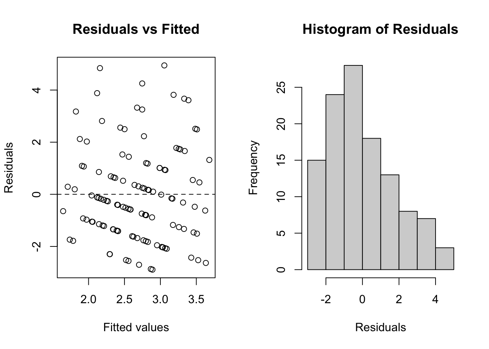
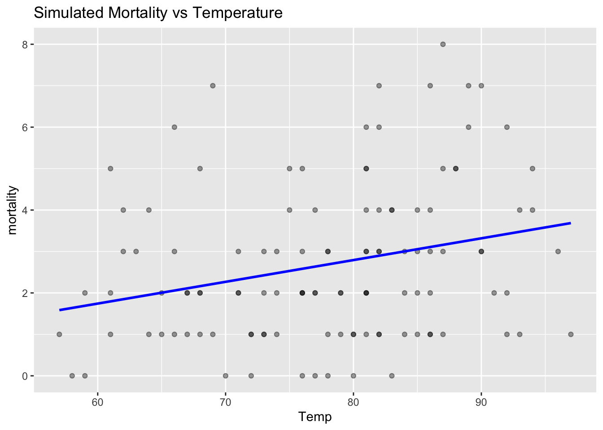

This lab demonstrates how to fit various likelihood-based regression models in the context of environmental epidemiology using real data (airquality) and simulated health outcomes.
Use Real-World Data: airquality with Simulated Mortality
model_normal <-lm(mortality ~ Temp + Ozone, data = data)summary(model_normal)
Call:
lm(formula = mortality ~ Temp + Ozone, data = data)
Residuals:
Min 1Q Median 3Q Max
-2.8895 -1.3564 -0.2601 1.0244 4.9452
Coefficients:
Estimate Std. Error t value Pr(>|t|)
(Intercept) -0.793853 1.769061 -0.449 0.6545
Temp 0.042367 0.025173 1.683 0.0951 .
Ozone 0.004172 0.007238 0.576 0.5655
---
Signif. codes: 0 '***' 0.001 '**' 0.01 '*' 0.05 '.' 0.1 ' ' 1
Residual standard error: 1.833 on 113 degrees of freedom
Multiple R-squared: 0.07242, Adjusted R-squared: 0.056
F-statistic: 4.411 on 2 and 113 DF, p-value: 0.0143
par(mfrow =c(1, 2))plot(model_normal$fitted.values, resid(model_normal),main ="Residuals vs Fitted",xlab ="Fitted values", ylab ="Residuals")abline(h =0, lty =2)hist(resid(model_normal), main ="Histogram of Residuals", xlab ="Residuals")

If residuals are roughly centered around zero and evenly spread (no funnel shape), and the histogram appears approximately normal, then the linear model fits reasonably well.
Plot
ggplot(data, aes(x = Temp, y = mortality)) +geom_point(alpha =0.4) +geom_smooth(method ="lm", se =FALSE, color ="blue") +labs(title ="Simulated Mortality vs Temperature")
`geom_smooth()` using formula = 'y ~ x'

2. Poisson Regression (Count Data)
model_poisson <-glm(mortality ~ Temp + Ozone + day_of_week, family =poisson(), data = data)summary(model_poisson)
Call:
glm(formula = mortality ~ Temp + Ozone + day_of_week, family = poisson(),
data = data)
Coefficients:
Estimate Std. Error z value Pr(>|z|)
(Intercept) -0.284699 0.628501 -0.453 0.6506
Temp 0.016351 0.008713 1.877 0.0606 .
Ozone 0.001588 0.002329 0.682 0.4952
day_of_weekMon 0.113599 0.205279 0.553 0.5800
day_of_weekSat -0.087511 0.191423 -0.457 0.6476
day_of_weekSun -0.281443 0.211944 -1.328 0.1842
day_of_weekThu 0.099410 0.223716 0.444 0.6568
day_of_weekTue -0.138377 0.197227 -0.702 0.4829
day_of_weekWed -0.248160 0.204040 -1.216 0.2239
---
Signif. codes: 0 '***' 0.001 '**' 0.01 '*' 0.05 '.' 0.1 ' ' 1
(Dispersion parameter for poisson family taken to be 1)
Null deviance: 161.52 on 115 degrees of freedom
Residual deviance: 144.71 on 107 degrees of freedom
AIC: 461.76
Number of Fisher Scoring iterations: 5
p_value <-1-pchisq(model_poisson$deviance, df = model_poisson$df.residual)cat("Deviance GOF Test p-value:", round(p_value, 4))
Deviance GOF Test p-value: 0.0089
If the p-value is greater than 0.05, it suggests that the model fits the data well. If it is less than 0.05, the model may not fit well.
Plot
data$pred_mortality <-predict(model_poisson, type ="response")ggplot(data, aes(x = pred_mortality, y = mortality)) +geom_point(alpha =0.5) +geom_smooth(method ="lm") +labs(title ="Predicted vs Observed Mortality (Poisson Model)")
`geom_smooth()` using formula = 'y ~ x'
3. Logistic Regression (Bernoulli Likelihood)
model_logistic <-glm(high_mort ~ Temp + Ozone, family =binomial(), data = data)summary(model_logistic)
Call:
glm(formula = high_mort ~ Temp + Ozone, family = binomial(),
data = data)
Coefficients:
Estimate Std. Error z value Pr(>|z|)
(Intercept) -3.853852 2.711675 -1.421 0.155
Temp 0.022688 0.037320 0.608 0.543
Ozone 0.011471 0.009313 1.232 0.218
(Dispersion parameter for binomial family taken to be 1)
Null deviance: 109.73 on 115 degrees of freedom
Residual deviance: 104.24 on 113 degrees of freedom
AIC: 110.24
Number of Fisher Scoring iterations: 4
library(ResourceSelection)hoslem_test <-hoslem.test(model_logistic$y, fitted(model_logistic), g =10)cat("Hosmer-Lemeshow Test p-value:", round(hoslem_test$p.value, 4))
Hosmer-Lemeshow Test p-value: 0.1871
If the Hosmer-Lemeshow test p-value is > 0.05, this suggests no significant difference between predicted and observed values, indicating good fit. A low p-value implies poor fit.
Plot
ggplot(data, aes(x =fitted(model_logistic), fill =as.factor(high_mort))) +geom_histogram(position ="identity", alpha =0.5, bins =30) +labs(title ="Fitted Probabilities for High Mortality Days", fill ="High Mortality")
4. Binomial Regression (Grouped Binary Outcomes)
model_binomial <-glm(cbind(deaths_over5, total_deaths - deaths_over5) ~ Temp + Ozone, family =binomial(), data = data)summary(model_binomial)
Call:
glm(formula = cbind(deaths_over5, total_deaths - deaths_over5) ~
Temp + Ozone, family = binomial(), data = data)
Coefficients:
Estimate Std. Error z value Pr(>|z|)
(Intercept) 0.034319 0.720196 0.048 0.962
Temp 0.002984 0.010156 0.294 0.769
Ozone 0.001329 0.002750 0.483 0.629
(Dispersion parameter for binomial family taken to be 1)
Null deviance: 121.84 on 115 degrees of freedom
Residual deviance: 120.84 on 113 degrees of freedom
AIC: 396.33
Number of Fisher Scoring iterations: 4
If the p-value is greater than 0.05, it suggests that the model fits the data well. If it is less than 0.05, the model may not fit well.
Plot
data$pred_prob_over5 <-predict(model_binomial, type ="response")ggplot(data, aes(x = pred_prob_over5)) +geom_histogram(bins =30, fill ="skyblue", alpha =0.7) +labs(title ="Predicted Proportion of Deaths Over Age 5")
This Quarto document covers the basics of various potential likelihood models with common data types and research questions. You can explore further with datasets like airquality, or public mortality databases from CDC Wonder or Eurostat.